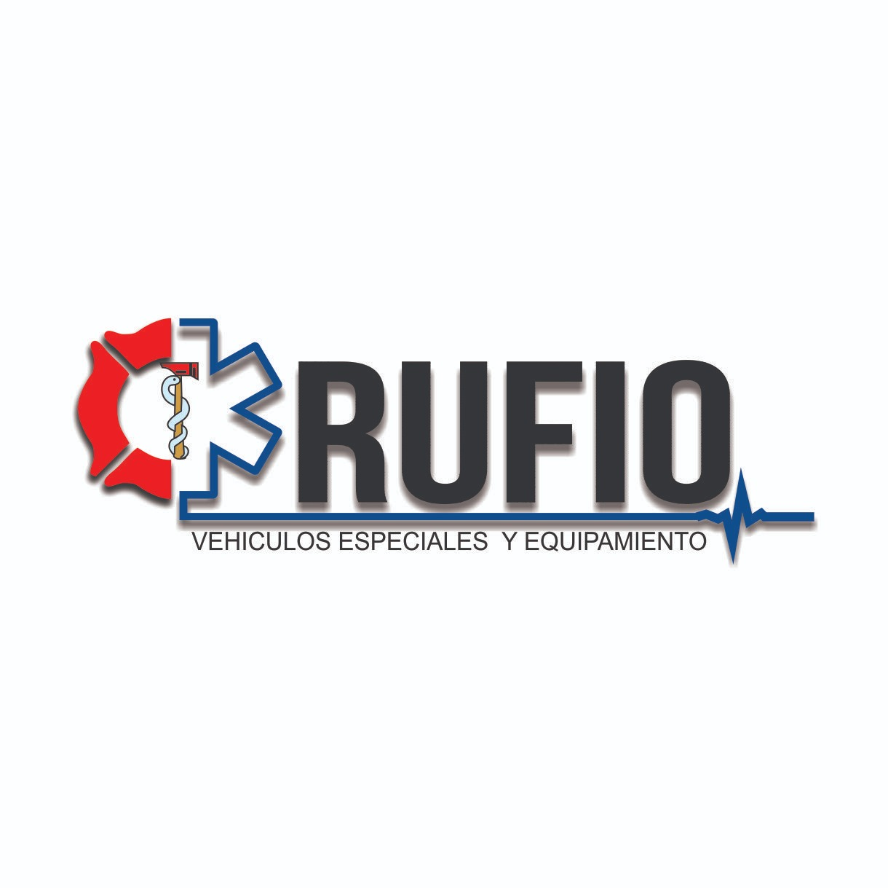
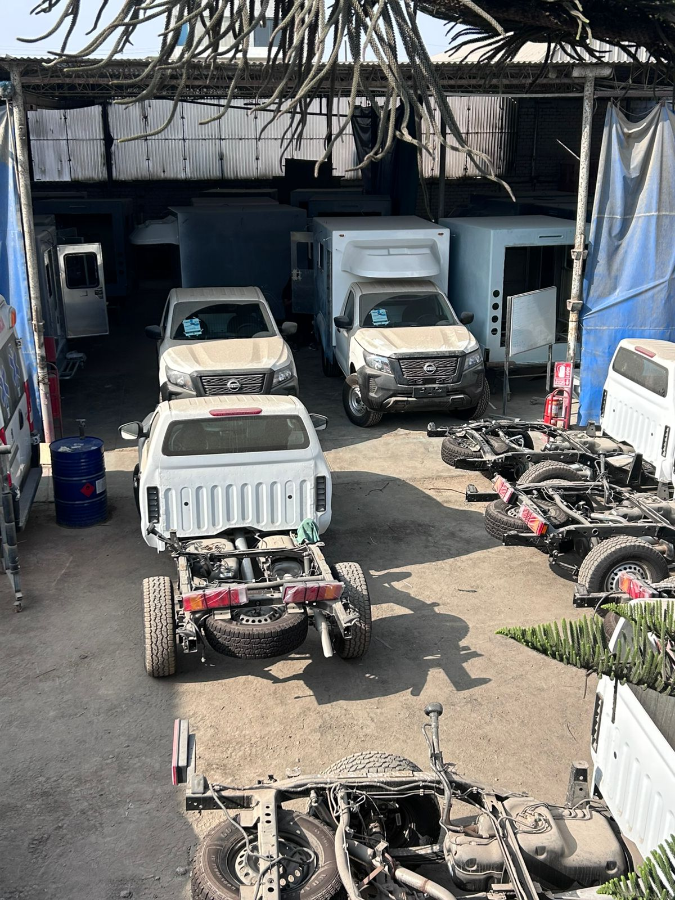
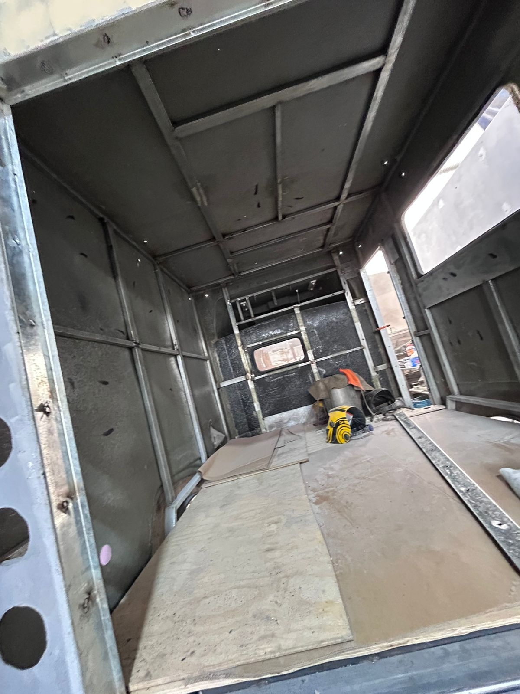
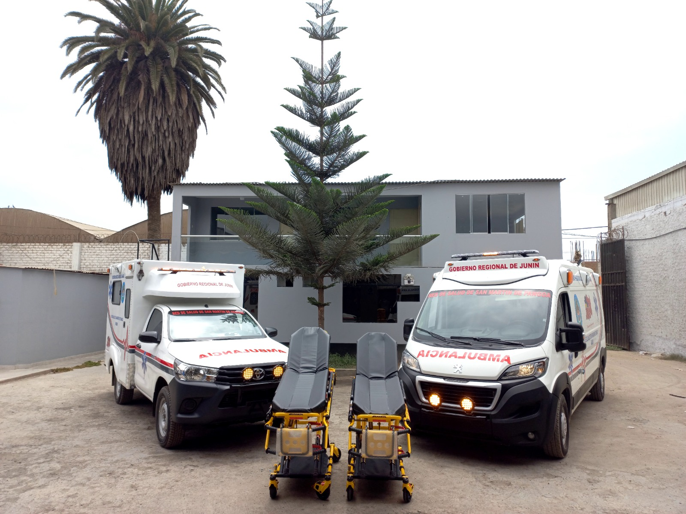
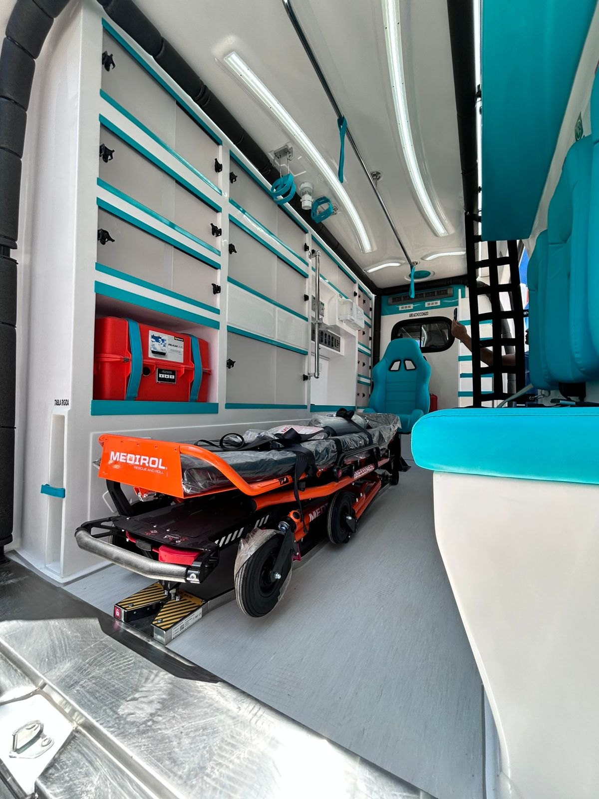
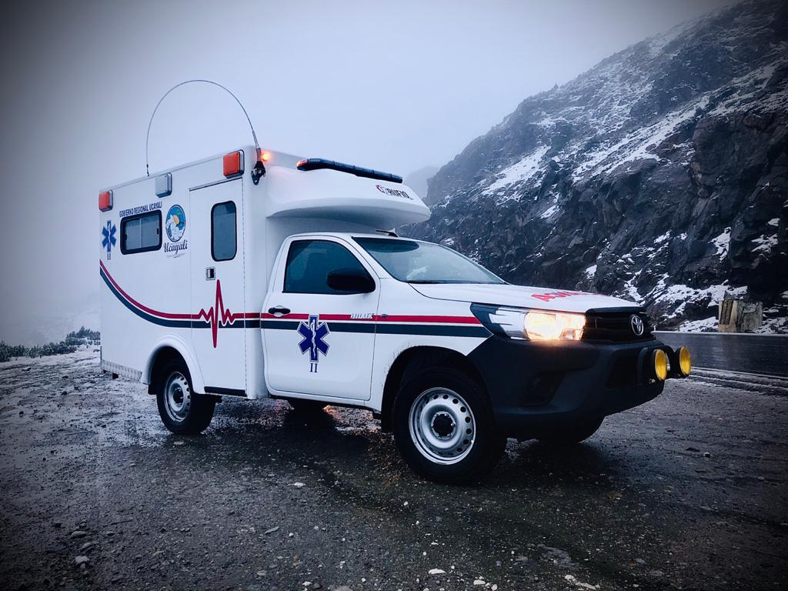

Organizan tiempos, producción, incidencias e indicadores mediante tablas, gráficos y paneles.


PRÁCTICA PREPROFESIONAL TERMINAL II · B1
Actividad 2
Herramientas Computacionales
Tecnología aplicada al análisis, diseño, simulación y mejora de procesos productivos.
ESTUDIANTEVallejos García Angel Romario · Lurín 2026
01 · PROPÓSITO
Tomar mejores decisiones con información confiable
Las herramientas computacionales convierten datos de planta, planos y observaciones en información útil para mejorar un proceso.
Aplicación en RUFIO: analizar el ensamblaje de estructuras metálicas con evidencias objetivas antes de proponer cambios.

02 · CUATRO APLICACIONES
Una herramienta para cada necesidad del proceso
Representan el flujo de trabajo para evaluar escenarios sin interrumpir la operación.
Apoyan el diseño de layouts, recorridos, estructuras y estaciones de trabajo.
03 · ANÁLISIS DE DATOS
De registros diarios a indicadores útiles
Excel permite estructurar la información; Power BI facilita visualizar tendencias y comparar el desempeño del proceso.
Excel
Tablas de tiempos, productividad, retrabajos y seguimiento de tareas.
Power BI
Paneles con KPIs, comparaciones y alertas visuales para decidir oportunamente.
04 · SIMULACIÓN

Probar mejoras antes de aplicarlas
La simulación modela recursos, tiempos y recorridos para evaluar cuellos de botella o una nueva distribución de planta.
Ejemplo: comparar el método actual con una estación que acerque herramientas y materiales al área de ensamblaje.
05 · DISEÑO ASISTIDO POR COMPUTADORA
Diseñar con precisión el espacio y los recursos
AutoCAD e Inventor permiten representar layouts, áreas de trabajo, piezas y propuestas de mejora con medidas verificables.
Resultado esperado: planos claros para comunicar la distribución propuesta y reducir errores de implementación.

06 · APLICACIÓN EN RUFIO
Secuencia de uso para mejorar el ensamblaje
PASO 01
Capturar
Registrar tiempos, recorridos, recursos y esperas.
PASO 02
Analizar
Visualizar indicadores e identificar pérdidas.
PASO 03
Diseñar
Proponer layout o método estandarizado.
PASO 04
Evaluar
Simular y comparar el resultado esperado.
El valor está en integrar la herramienta con la observación del proceso y una decisión sustentada.
07 · CIERRE
La tecnología mejora procesos cuando convierte datos en decisiones
El uso combinado de análisis de datos, simulación y diseño asistido aporta una base objetiva para elevar productividad, calidad y eficiencia.
